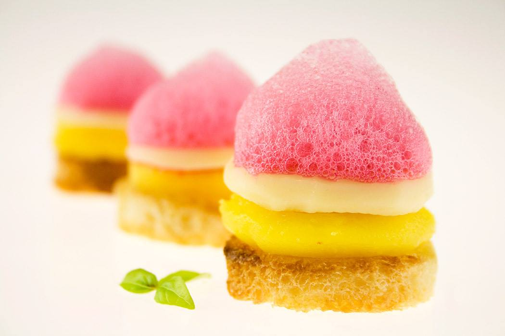
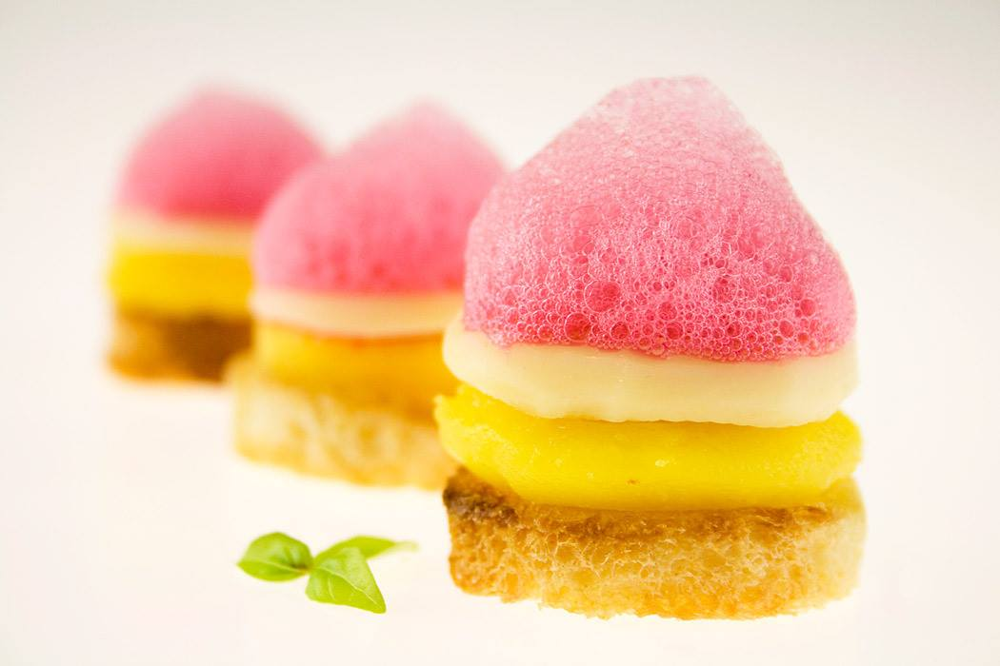
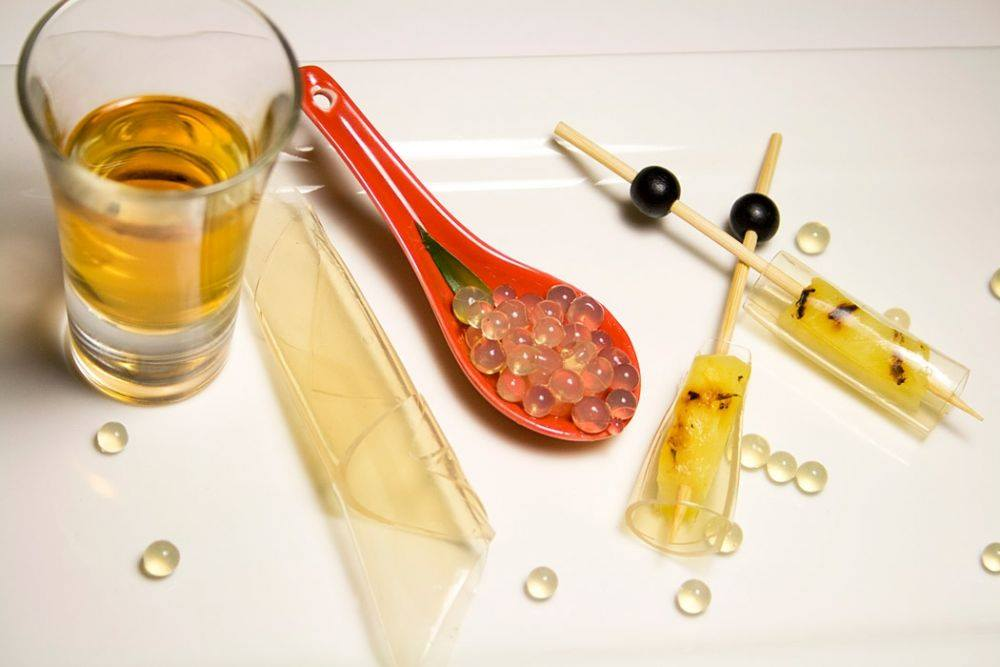
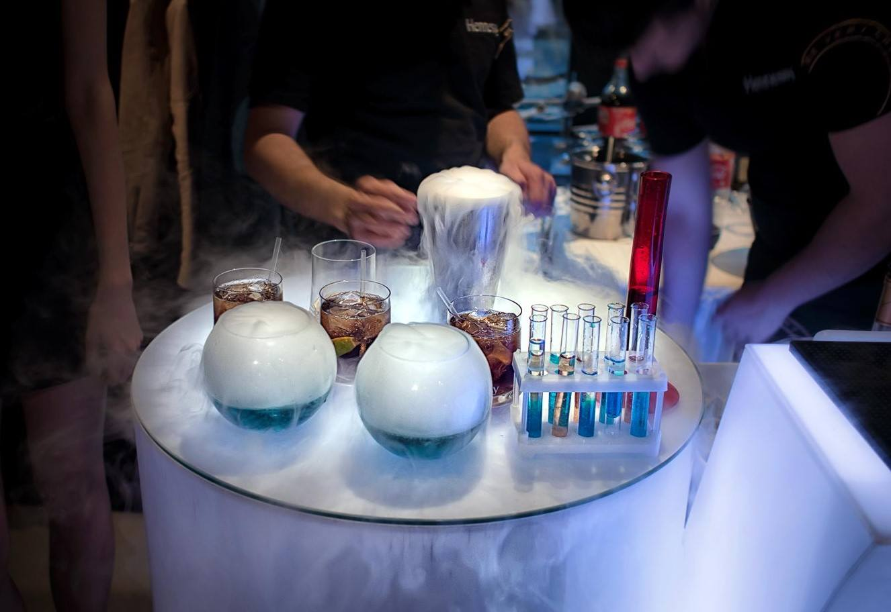

Новини в світі кулінарному світі
 

Молекулярна кухня – це нове слово в кулінарії. Усі про неї чули, але достеменно не знають що це. Одні стверджують, що якщо там присутні хімічні процеси, то це шкідливо. Інші, більш усвідомлені у цій справі, знають, що це приготування їжі за допомогою різних фізико-хімічних процесів і жодної шкоди організму не завдає.
Засновниками молекулярної кухні вважаються хімік Ерве Тис та фізик ядерник Ніколас Курті. Про такий вид гастрономії почули ще в 1992 роках і з того часу молекулярна кухня стала невід’ємною частиною багатьох відомих та дорогих ресторанів.
Страви молекулярної кухні готуються не для того, щоб досита нагодувати людину, а довести всім, що приготування їжі може бути мистецтвом. Замість звичайної сковорідки та каструлі, кулінари молекулярної кухні використовують центрифугу, сухий лід, азот, вакуумне приготування їжі. А замість приправ – спеціальні компоненти, такі як агар-агар, мальтодекстрин, ксантанову смолу, лактат кальцію тощо. Завдяки цьому можна отримати з будь якого продукту піну, морозиво чи гель.
Гелі і сфери

Страви у вигляді гелю – не новинка для гурманів, оскільки всім здавна відомий желатин і агар-агар. Але створення їстівних гелевих сфер з будь-яким смаком, одночасно і холодних, і гарячих – це щось свіженьке. Приготування такого дива нагадує принцип виготовлення у радянські часи фальшивої чорної та червоної ікри.
Рідкий азот

Рідкий азот використовується для швидкої заморозки будь-яких речовин. Він має ефектний вигляд, тому існує безліч страв, які готуються перед гостями за допомогою рідкого азоту. Його використовують у приготуванні так званого «ідеального морозива», у якому не міститься жодної краплі жиру. На ложечку видавлюють невелику кульку мусу, поливають рідким азотом. Чимось схоже на безе, яке миттєво розтає в роті.